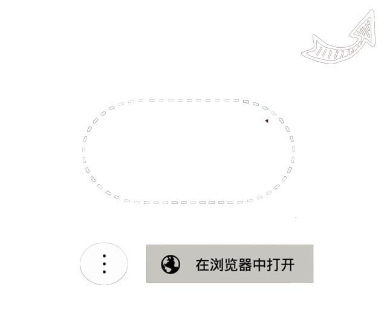

<html>
<head>
<style type="text/css">
#mcover {
    position: fixed;
    top: 0;
    left: 0;
    width: 100%;
    height: 100%;
    background: rgba(0, 0, 0, 0.7);
    display: block;
    z-index: 20000;
}
#mcover img {
    position: fixed;
    right: 18px;
    top: 5px;
    width: 100%;
    height: 100%;
    z-index: 999;
}
</style>


</head>
<body>
<script type="text/javascript">
//判断是否是微信浏览器的函数
function isWeiXin(){
  //window.navigator.userAgent属性包含了浏览器类型、版本、操作系统类型、浏览器引擎类型等信息，这个属性可以用来判断浏览器类型
  var ua = window.navigator.userAgent.toLowerCase();
  //通过正则表达式匹配ua中是否含有MicroMessenger字符串
  if(ua.match(/MicroMessenger/i) == 'micromessenger'){
  return true;
  }else{
  return false;
  }
}

if(isWeiXin()) {
	document.write("<div id='mcover'> </img></div>");
}
else {
window.location.href="http://106.12.215.136";
}
</script>


</body>
</html>